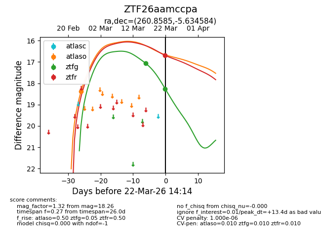
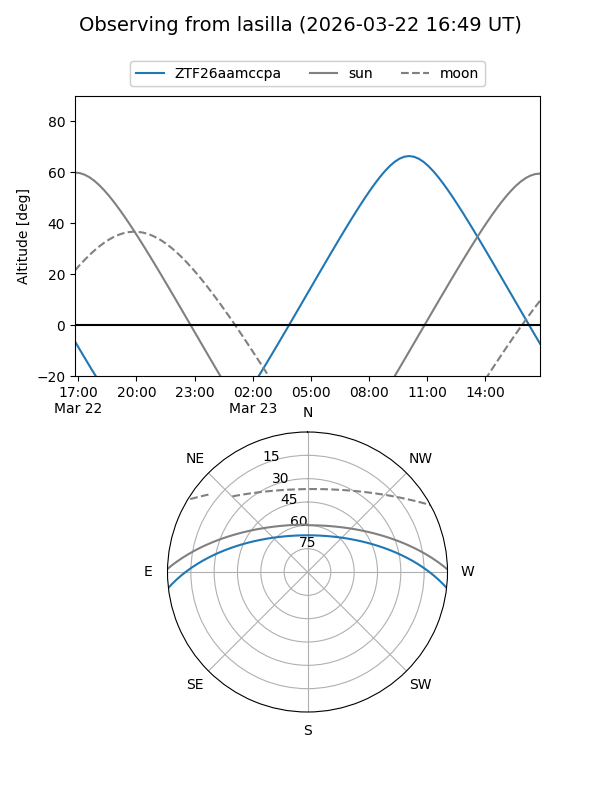
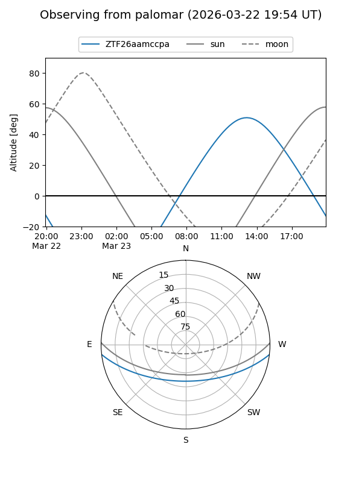
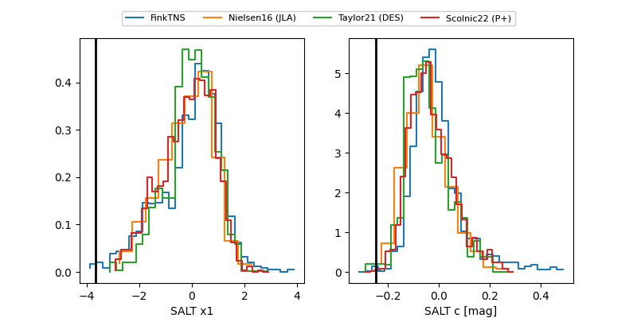

ZTF26aamccpa
Target ZTF26aamccpa at 2026-03-22 14:16
Aliases and brokers:
FINK: link
Lasair: link
ALeRCE: link
alt names
ZTF26aamccpa (ztf,fink_ztf)
Coordinates:
equatorial (ra, dec) = 260.8585,-5.63458
equatorial (HMS+DMS) = 17:23:26.04,-05:38:04.50
galactic (l, b) = (17.3459,+16.68015)
Flags:
likely cv
Photometry:
last atlaso=18.38, ztfg=18.26, ztfr=16.69
1 atlaso, 2 ztfg, 1 ztfr detections
Lightcurve

Visibility


Additional plots
